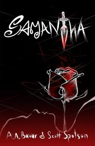

Scott Spotson
New Upcoming Books
August 2017 news... Scott's newest book, "Samantha," co-authored with Amir Bavar, has been on the "hot and trending" list for Kindle Scout for two weeks so far! It's an exciting time, with two weeks left! To check it out (and please nominate it by clicking on the Nominate button) go to the Kindle Scout website by typing in these two words "KINDLE SCOUT" on your favourite search engine! Campaign ends Sept. 5. To be clear, "Samantha" is not published yet, as one of the requirements for Kindle Scout campaign is that the book not be published yet. How to describe "Samantha"? It's a paranormal / psychological heart-pounding thriller, and it's like "Bewitched" meets "Fatal Attraction"!
#thriller #ebook #kindlescout
#thriller #ebook #kindlescout
